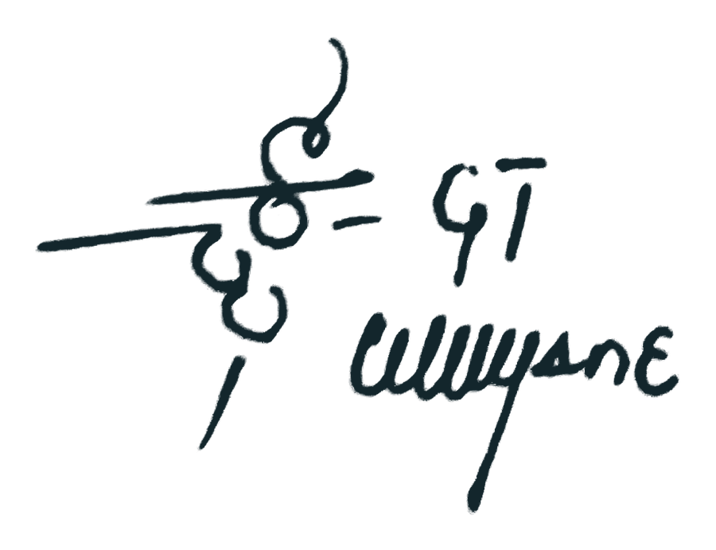

1.The act
I found Utilism: an economic doctrine and a new work order, built since 2019 and now complete and welded. Our world needs value held to real transformation over speculation, with exploitative gating and idle hoarding abolished.
2.Definition
Utilism is an economic system where the transformation of collective resources creates utility, and the relevant service effort is rewarded for enabling usership.
3.The work order
Service.
Service is outsourced energy — energy spent forming a resource for another party, so that another becomes its user. Service is only the energy sent outward, into another's use.
Reward tied to outcome.
Utility is the use another party gains. A transformation no one uses is no outcome, and earns nothing.
The will to work.
Utilism does not share reward by need or entitlement; it grants no idle credit. Reward flows to service formed, and credit to the hand that did the work.
Efficiency and innovation.
A lesser result earns less, so the saving can never come from thinning the work — only from finding a better way to the same result. The effort saved is the maker's to keep. Efficiency becomes the goal, and innovation is the search for it.
4.The principles
The doctrine stands on six settled principles, in order:
- Distribution — raw resources are collective dividends. Each person draws an equal share of the common stock, before any service is rendered. That dividend share is held by right. Reward is the formed result, held by work. One is given to all; the other is earned by the hand that forms.
- Identity — Service-Exclusive Trade. Only formed service crosses between parties; raw stock never trades.
- Standard — price is set by the class of service. Scope is bargained, never the rate.
- Qualification — reward requires transformation both called for and observed. What is formed must answer a present call for its use, and be observed in the forming. Nothing is paid on an unverified claim, nor on transformation made with no call beneath it.
- Success — utility is the measure, not profit. What matters is that the thing is used.
- Rights — usership over ownership. Every arrangement is read by who enabled whom to use what.
5.Reach
Trade architecture at home and abroad functions alike. Commodity is never exported; what crosses outward is service and utility, made where the maker is. Skilled workforce may visit a foreign domain to deliver service, not to fall under foreign possession and command. Foreign exchange is state mandate solely to access resources and complex service beyond domestic reach.
6.Class structure
There is one class. Every entity is a Fruitan of equal standing, drawing equal shares of the common stock by right. The war is not on any group but on conduct. An energy war between idle claimants and the ones who make use possible. A state to resist, not a caste to remove.
7.The correction
Utilism is collectivism done right, through the road that arrives. Collectivist doctrines only gestured at that ultimate goal, the destination the human longing was reaching for. Every path there failed to arrive. Utilism designed the path.
8.Standing
This founding is given weight by the work behind it, and my decision to call it done. This declaration is that founding. From this day the doctrine is settled. Not forming.
Declared this 27th day of September, 2026,
by my own hand and under my own name.

Founder: Given Taboga Manyane
North West, South Africa